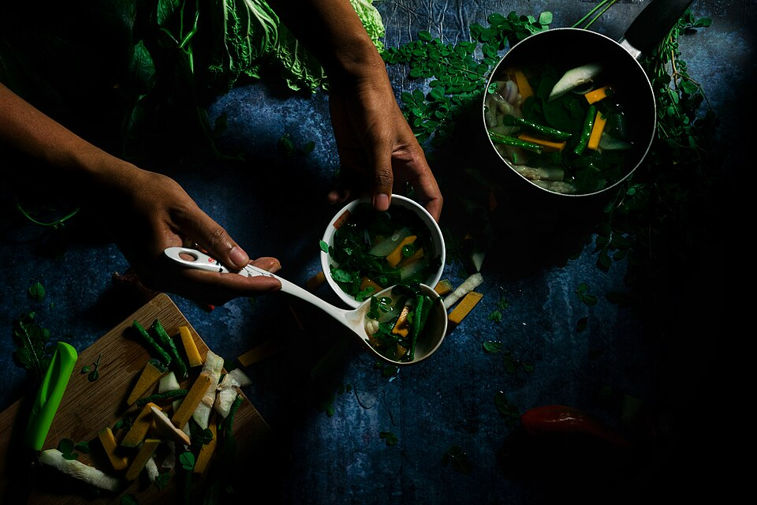

Utan Bisaya

Utan Bisaya is a simple Filipino vegetable dish that is composed of a variety of veggies. The vegetables are
boiled in water and sometimes fish is added. This dish might look plain and simple, but it is packed with
vitamins and nutrients that can boost our health (as long as you limit your rice intake). The fish in this recipe
along with the long green pepper are optional ingredients. I added these because I want my dish to be tastier and spicy.
Ingredients in this Utan Bisaya recipe
- 1 piece sliced Chinese eggplant
- 10 pieces okra
- 2 thumbs of sliced giner
- 1 piece of wedged tomato
- 5 stalks of sliced green onions
- 1 1/2 cups of spinach
- 1 1/2 cups of cubed squash
- 1 cup malunggay leaves
- 2 pieces long reen pepper
- 2 slices fish fillet either bake or fried
- 2 cups of string beans cut into 2 inch length
- 1 cup sliced luffa
- salt to taste
- 2 cups water
How to cook Utan Bisaya
- Bring the water to a boil.
- Add the ginger and squash. Continue to boil for 8 minutes (covered).
-
Stir-in the string beans, scallions, okra, and tomato. Let the liquid re-boil and then add the long
green pepper and eggplant.
- Stir and add the fish. Cover and cook for 10 minutes.
-
Add the luffa and malunggay leaves. Cover and cook for 3
to 5 minutes. Add some salt to taste and spinach.
- Transfer to a serving bowl. Serve with white rice.
- Share and enjoy!
back to Odin Recipes